Recently updated
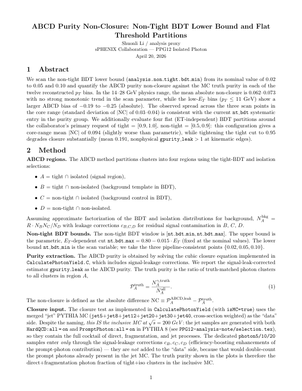
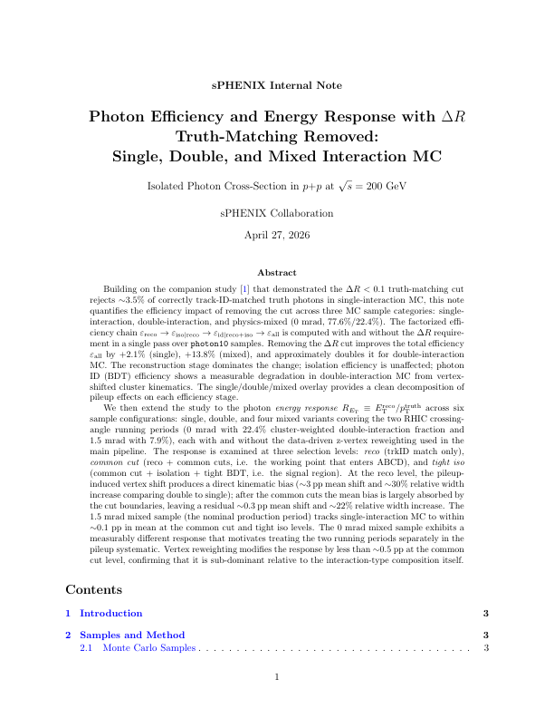
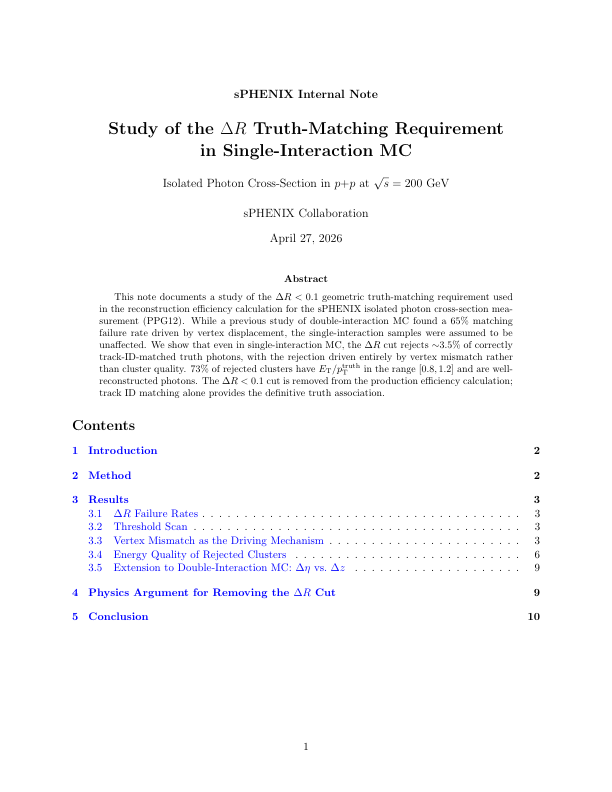
Reports
| Preview | Date | Topic | Title | Description | Download |
|---|---|---|---|---|---|
| just now2026-04-21 | BDT Training & Systematics | ABCD Purity Non-Closure: Non-Tight BDT Lower Bound and Flat Threshold PartitionsNEW | We scan the non-tight BDT lower bound (analysis.non\_tight.bdt\_min) from its nominal value of 0.02 to 0.05 and 0.10 and quantify the ABCD purity non-closure against the MC truth purity in each of th… | PDF · 0.5 MB | |
| just now2026-04-20 | Efficiency & Energy Response | Photon Efficiency and Energy Response with ΔR Truth-Matching Removed: Single, Double, and Mixed Interaction MCNEW | Building on the companion study~dr_study that demonstrated the ΔR < 0.1 truth-matching cut rejects 3.5% of correctly track-ID-matched truth photons in single-interaction MC, this note quantifies the… | PDF · 1.5 MB | |
| just now2026-04-20 | Efficiency & Energy Response | Study of the ΔR Truth-Matching Requirement in Single-Interaction MCNEW | This note documents a study of the ΔR < 0.1 geometric truth-matching requirement used in the reconstruction efficiency calculation for the sPHENIX isolated photon cross-section measurement (PPG12). W… | PDF · 0.3 MB | |
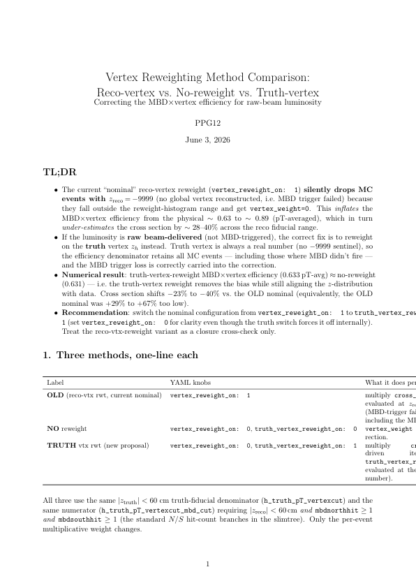 |
just now2026-04-20 | Selection & Config Comparisons | Vertex Reweighting Method Comparison: Reco-vertex vs. No-reweight vs. Truth-vertex: Correcting the MBDvertex efficiency for raw-beam luminosityNEW | The current ``nominal'' reco-vertex reweight (vertex\_reweight\_on: 1) silently drops MC events with z_ reco=-9999 (no global vertex reconstructed, i.e. MBD trigger failed) because they fall outside… | PDF · 0.4 MB |
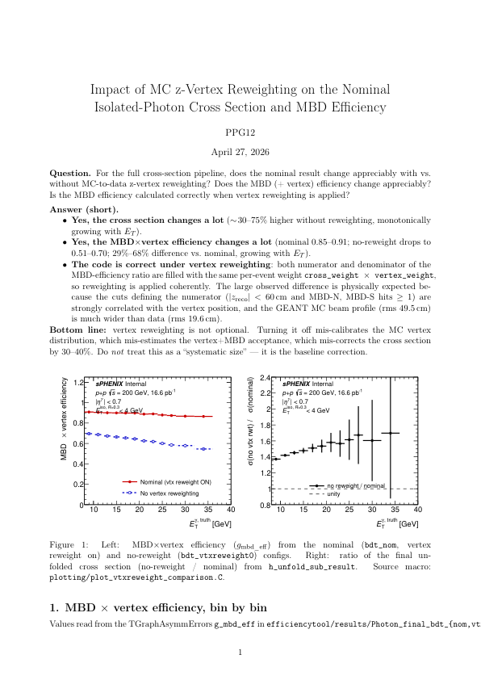 |
just now2026-04-20 | Final Cross-Section | Impact of MC z-Vertex Reweighting on the Nominal Isolated-Photon Cross Section and MBD EfficiencyNEW | [H] [width=0.98]figures/vtxreweight/vtxreweight_comparison.pdf Left: MBDvertex efficiency (g_ mbd\_eff) from the nominal (bdt\_nom, vertex reweight on) and no-reweight (bdt\_vtxreweight0) configs. Ri… | PDF · 0.3 MB |
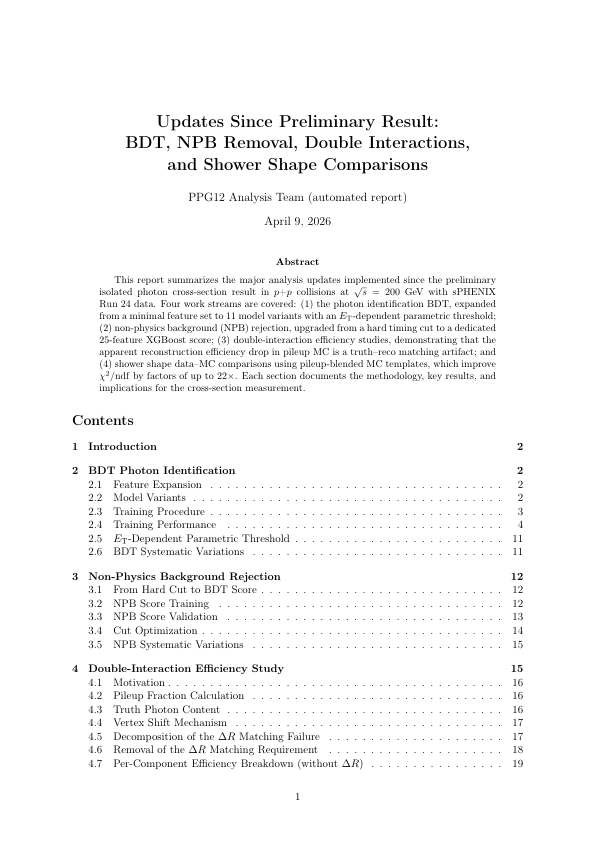 |
just now2026-04-20 | Status Updates & Summaries | Updates Since Preliminary Result: BDT, NPB Removal, Double Interactions, and Shower Shape ComparisonsNEW | This report summarizes the major analysis updates implemented since the preliminary isolated photon cross-section result in pp collisions at s = 200~ with sPHENIX Run~24 data. Four work streams are c… | PDF · 4.0 MB |
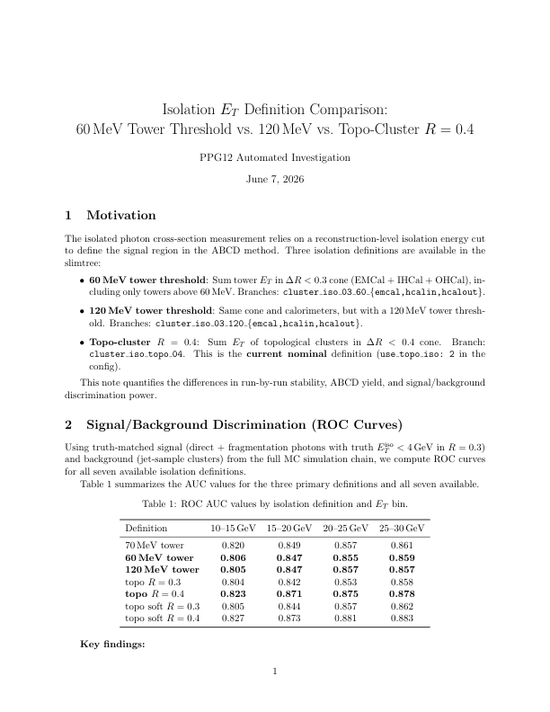 |
just now2026-04-20 | Isolation | Isolation E_T Definition Comparison: 60 MeV Tower Threshold vs. 120 MeV vs. Topo-Cluster R=0.4NEW | The isolated photon cross-section measurement relies on a reconstruction-level isolation energy cut to define the signal region in the ABCD method. Three isolation definitions are available in the sl… | PDF · 0.6 MB |
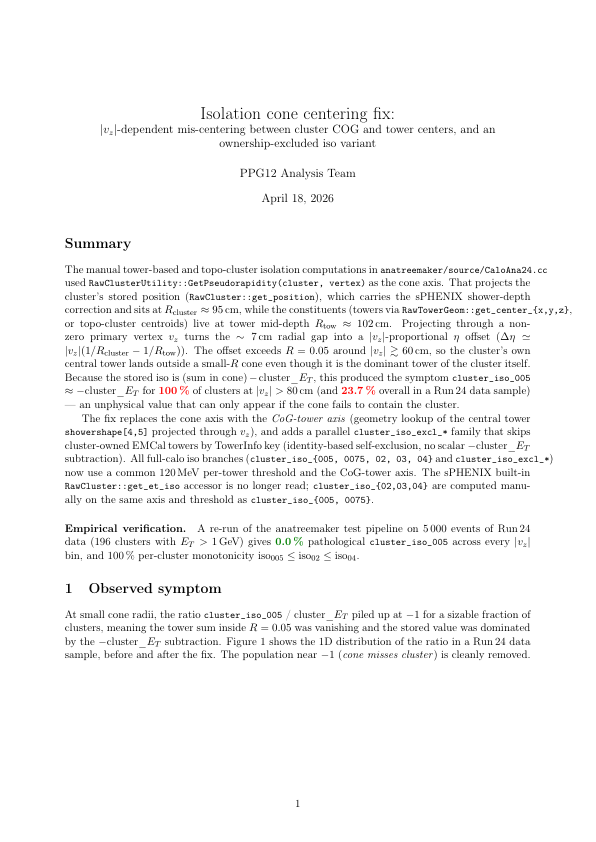 |
just now2026-04-20 | Isolation | Isolation cone centering fix: |v_z|-dependent mis-centering between cluster COG and tower centers, and an ownership-excluded iso variantNEW | The manual tower-based and topo-cluster isolation computations in anatreemaker/source/CaloAna24.cc used RawClusterUtility::GetPseudorapidity(cluster, vertex) as the cone axis. That projects the clust… | PDF · 0.4 MB |
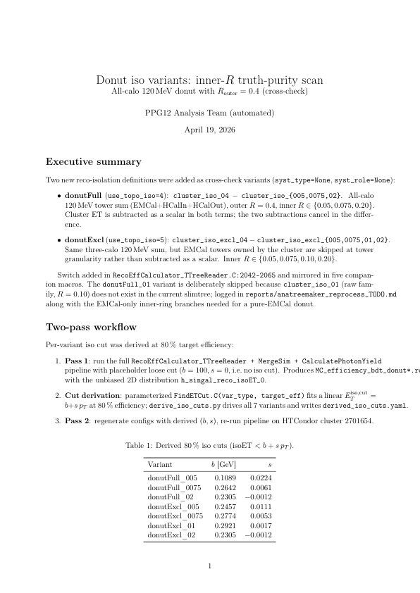 |
just now2026-04-20 | Purity | Donut iso variants: inner-R truth-purity scan and ABCD closure: All-calo 120 MeV donut with R_outer=0.4 (cross-check)NEW | Two new reco-isolation definitions were added as cross-check variants (syst\_type=None, syst\_role=None): donutFull (use\_topo\_iso=4): cluster\_iso\_04 - cluster\_iso\_\005,0075,02\. All-calo 120 Me… | PDF · 1.7 MB |
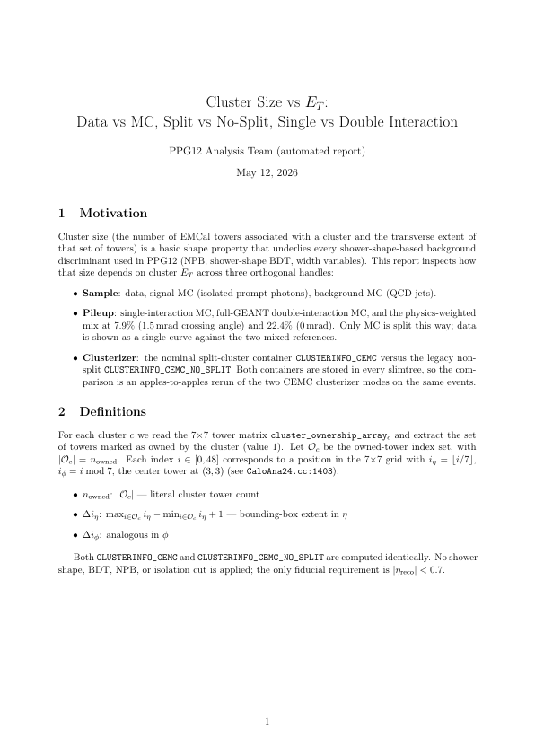 |
1m ago2026-04-20 | Shower Shape | Cluster Size vs E_T^γ: Data vs MC, Split vs No-Split, Single vs Double InteractionNEW | Cluster size (the number of EMCal towers associated with a cluster and the transverse extent of that set of towers) is a basic shape property that underlies every shower-shape-based background discri… | PDF · 0.6 MB |
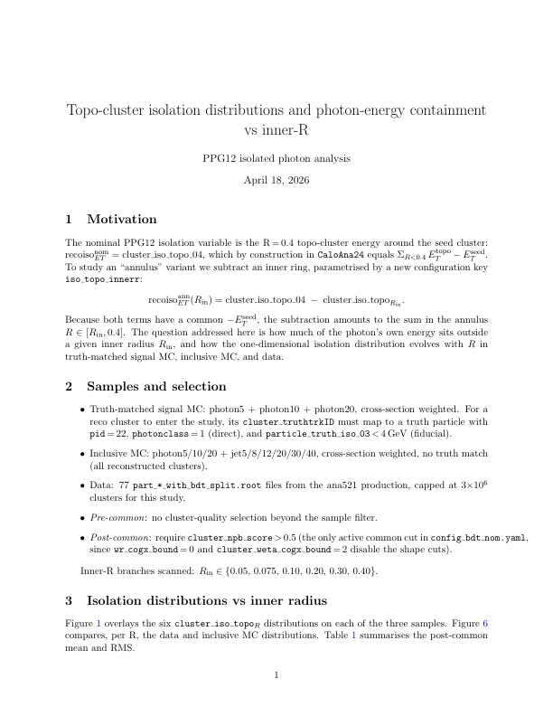 |
16h ago2026-04-19 | Isolation | Topo-cluster isolation distributions and photon-energy containment vs inner-RNEW | The nominal PPG12 isolation variable is the R = 0.4 topo-cluster energy around the seed cluster: recoiso_ET^nom = cluster\_iso\_topo\_04, which by construction in CaloAna24 equals _R<0.4 E_T^topo - E… | PDF · 0.6 MB |
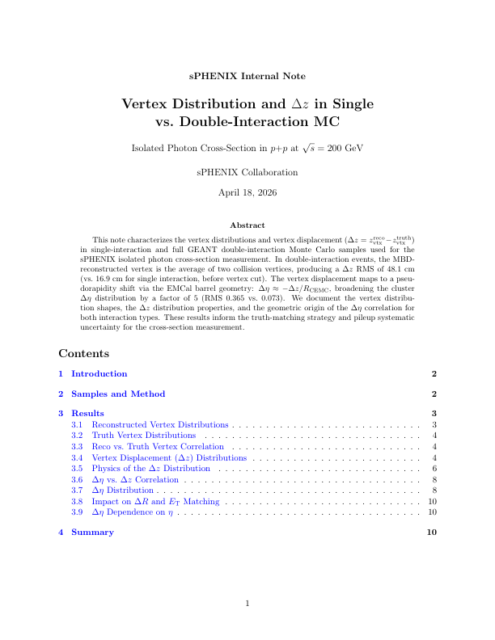 |
17h ago2026-04-19 | Vertex | Vertex Distribution and Δ z in Single vs. Double-Interaction MCNEW | This note characterizes the vertex distributions and vertex displacement (Δ z = z_vtx^reco - z_vtx^truth) in single-interaction and full GEANT double-interaction Monte Carlo samples used for the sPHE… | PDF · 0.2 MB |
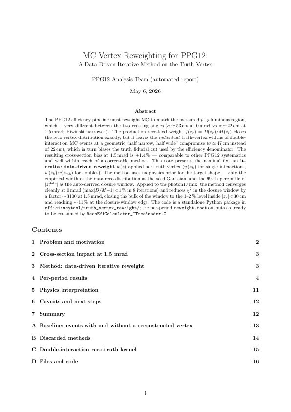 |
17h ago2026-04-19 | Vertex | MC Vertex Reweighting for PPG12: A Data-Driven Iterative Method on the Truth VertexNEW | The PPG12 efficiency pipeline must reweight MC to match the measured p+p luminous region, which is very different between the two crossing angles (53 cm at 0 mrad vs 22 cm at 1.5 mrad, Piwinski narro… | PDF · 0.2 MB |
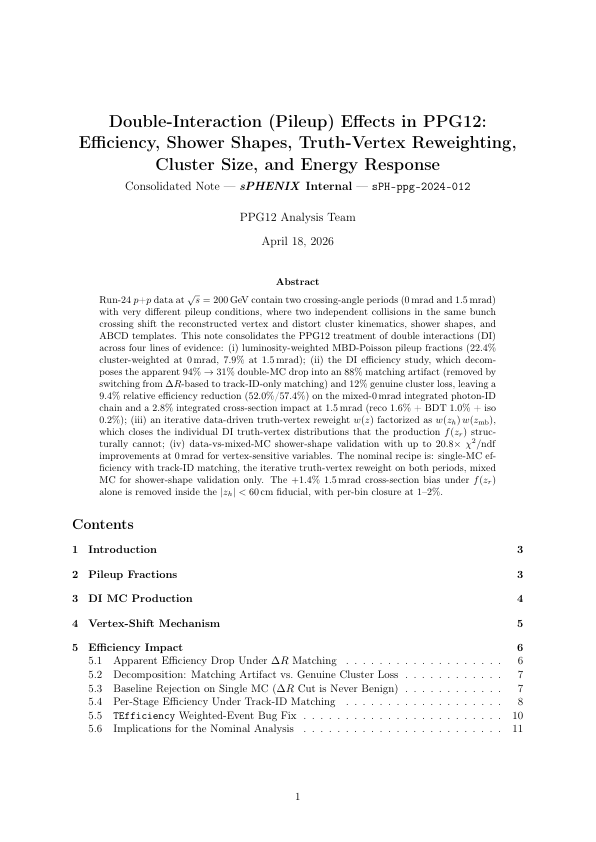 |
17h ago2026-04-19 | Double Interaction / Pileup | Double-Interaction (Pileup) Effects in PPG12: Efficiency, Shower Shapes, Truth-Vertex Reweighting, Cluster Size, and Energy ResponseNEW | Run-24 pp data at s = 200 contain two crossing-angle periods (0 mrad and 1.5 mrad) with very different pileup conditions, where two independent collisions in the same bunch crossing shift the reconst… | PDF · 0.2 MB |
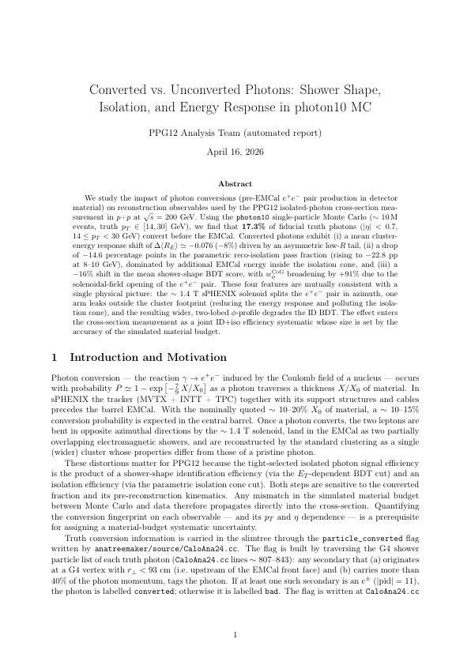 |
17h ago2026-04-19 | Shower Shape | Converted vs. Unconverted Photons: Shower Shape, Isolation, and Energy Response in photon10 MCNEW | We study the impact of photon conversions (pre-EMCal pair production in detector material) on reconstruction observables used by the PPG12 isolated-photon cross-section measurement in pp at s=200~GeV… | PDF · 0.2 MB |
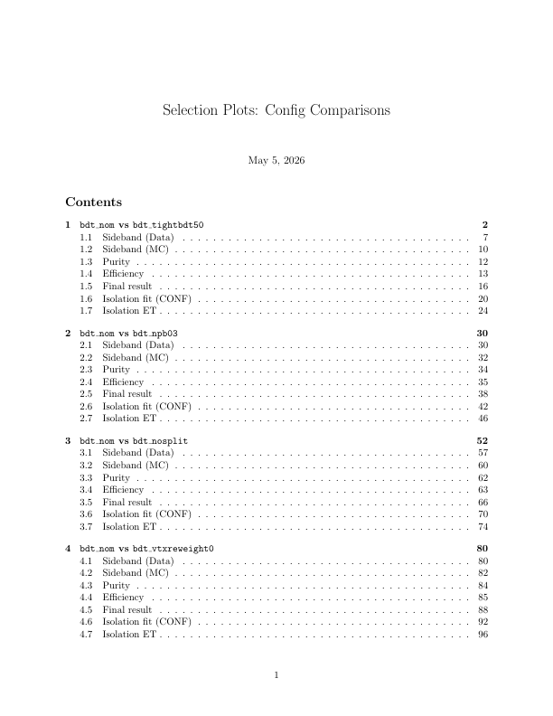 |
3d ago2026-04-17 | Selection & Config Comparisons | Selection Plots: Config ComparisonsNEW | difffile— config\_bdt\_nom.yaml difffile+++ config\_bdt\_tightbdt50.yaml diffhunk@@ -20,5 +20,5 @@ response\_outfile: "/sphenix/user/shuhangli/ppg12/efficiencytool/results/MC\_response" data\_outfile… | PDF · 3.2 MB |
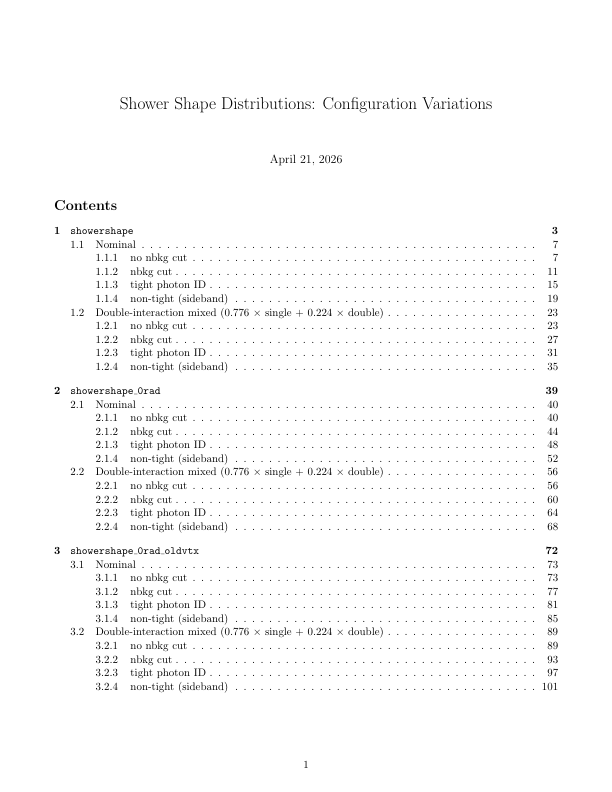 |
6d ago2026-04-13 | Shower Shape | Shower Shape Distributions: Configuration VariationsNEW | Shower Shape Distributions: Configuration Variations | PDF · 8.8 MB |
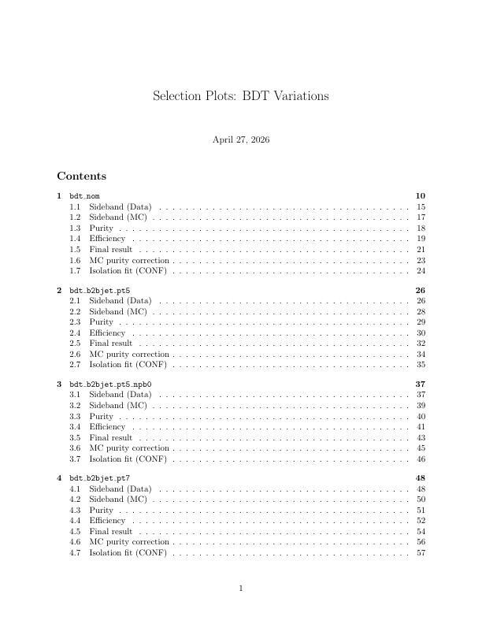 |
11d ago2026-04-08 | Selection & Config Comparisons | Selection Plots: BDT Variations | \#config.yaml \#bdt nominal input: photon\_jet\_file\_root\_dir: "/sphenix/user/shuhangli/ppg12/FunWithxgboost/" photon\_jet\_file\_branch\_dir: "/bdt\_split.root" \#photon\_jet\_file\_branch\_dir: "… | PDF · 21.6 MB |
Figures
iso_topo_containment_vs_R.pdf
iso_topo_dist_data_vs_mc.pdf
iso_topo_dist_overlay.pdf
iso_topo_dist_overlay_per_clEt.pdf
iso_tower_dist_overlay_per_clEt.pdf
iso_tower_emcal70_per_clEt.pdf
iso_tower_excl_per_clEt.pdf
iso_tower_sub1_per_clEt.pdf
iso_tower_thresh_r03_per_clEt.pdf
mc_purity_innerR_donut_scan.pdf
mc_purity_innerR_scan.pdf
mc_purity_innerR_tower_scan.pdf
purity_closure_flat_scan.pdf
purity_closure_ntbdt_scan.pdf
purity_sim_bdt_flat_t85_nt50.pdf
purity_sim_bdt_flat_t90_nt50.pdf
purity_sim_bdt_flat_t90_nt70.pdf
purity_sim_bdt_flat_t95_nt50.pdf
purity_sim_bdt_nom.pdf
purity_sim_bdt_ntbdtmin05.pdf
purity_sim_bdt_ntbdtmin10.pdf
purity_sim_flat_scan.pdf
purity_sim_ntbdt_scan.pdf
xsec_flat_scan.pdf
xsec_ratio_flat_scan.pdf
Past deploys
Browse 95 past deploy(s) across 1 month(s)
April 2026 (95)
| Date | Tag | Commit | Δ | Message |
|---|---|---|---|---|
| 2026-04-17 02:00 | site/2026-04-17 | 8a0e19a | diff | Fix report titles and content issues: deploy_pages.py title extraction, DI report caption/table sync, f_1/e_{t1} collision, various numeric/terminology fixes |
| 2026-04-16 22:42 | site/2026-04-16-21 | f254182 | diff | New report: converted photon study (showershape, iso, energy response in photon10 MC) |
| 2026-04-16 21:51 | site/2026-04-16-20 | 498167e | diff | Update site: 2026-04-16 21:51 EDT |
| 2026-04-16 21:50 | site/2026-04-16-19 | 1540b38 | diff | Update site: 2026-04-16 21:50 EDT |
| 2026-04-16 21:50 | site/2026-04-16-18 | 0da8f99 | diff | Update site: 2026-04-16 21:50 EDT |
| 2026-04-16 21:49 | site/2026-04-16-17 | 4c466da | diff | Update site: 2026-04-16 21:49 EDT |
| 2026-04-16 21:37 | site/2026-04-16-16 | 95d5a77 | diff | Rename response levels: matched->reco, reco->common cut, selected->tight iso |
| 2026-04-16 21:24 | site/2026-04-16-15 | f7bc2a5 | diff | resp_summary_4panel: legend on every panel |
| 2026-04-16 19:41 | site/2026-04-16-14 | 846f711 | diff | Photon energy response report: review round (abstract numbers, plot legends, vtxrw diagnostics annotations) |
| 2026-04-16 19:16 | site/2026-04-16-13 | 53d8266 | diff | Photon energy response vs double interaction: single/double/mixed (0mrad, 1.5mrad), with/without vtx reweight |
| 2026-04-16 17:45 | site/2026-04-16-12 | 67ef6dc | diff | Resolve cross-refs in efficiency_deltaR_comparison (third pdflatex pass) |
| 2026-04-16 17:44 | site/2026-04-16-11 | 9eb1837 | diff | Add photon energy response study (single/double/mixed 0 mrad/mixed 1.5 mrad, with/without vtx reweight) |
| 2026-04-16 17:42 | site/2026-04-16-10 | f0061b2 | diff | Add photon energy response study (single/double/mixed 0 mrad/mixed 1.5 mrad, with/without vtx reweight) |
| 2026-04-16 15:03 | site/2026-04-16-9 | 4b66cb8 | diff | truth-vertex-reweight: remove post-iteration snap; 0 mrad converges in 8 iter to <1% and 1.5 mrad chi2 drops 3100x |
| 2026-04-16 14:21 | site/2026-04-16-8 | 434f21f | diff | truth-vertex-reweight report: remove target-Gauss, add seed/parametric overlay, refresh fit numbers |
| 2026-04-16 14:08 | site/2026-04-16-7 | eb296b9 | diff | Update site: 2026-04-16 14:08 EDT |
| 2026-04-16 12:30 | site/2026-04-16-6 | 5b513cf | diff | Add BDT training pipeline audit report |
| 2026-04-16 11:17 | site/2026-04-16-5 | b295e1b | diff | DI shower shape: final chi2 update from per-iteration normalized refit |
| 2026-04-16 11:15 | site/2026-04-16-4 | d48660f | diff | DI shower shape: re-fit with per-iteration normalization (<w>=1) |
| 2026-04-16 02:12 | site/2026-04-16-3 | c8e523e | diff | DI shower shape report: corrected truth-vertex reweight (normalized w(z)) + old-vtx comparison plots |
| 2026-04-16 00:29 | site/2026-04-16-2 | fbb017f | diff | Rerun with h_truth_pT_novtx + vtxreweight0 comparison |
| 2026-04-16 00:08 | site/2026-04-16-1 | d5c2a64 | diff | Add truth vertex comparison figure (old vs new reweight) |
| 2026-04-15 22:36 | site/2026-04-15-9 | 5d8585e | diff | Regenerate DI shower shape report with iterative truth-vertex reweight |
| 2026-04-15 21:30 | site/2026-04-15-8 | baaeb06 | diff | Regenerate nosplit selection plots from fresh result files |
| 2026-04-15 21:24 | site/2026-04-15-7 | 46a28f2 | diff | Revert plot_bdt_variations.C, remove plot_nosplit_comparison.C |
| 2026-04-15 21:23 | site/2026-04-15-6 | ebc50e2 | diff | Update truth-vertex-reweight report: sPHENIX label + crossing angle on every panel |
| 2026-04-15 21:23 | site/2026-04-15-5 | 12a8aab | diff | Add nosplit vs nom pair to comparison_report |
| 2026-04-15 21:10 | site/2026-04-15-4 | 08ac99b | diff | Add nosplit vs split cross-section comparison + plots |
| 2026-04-15 20:43 | site/2026-04-15-3 | ac8b4e1 | diff | Update site: 2026-04-15 |
| 2026-04-15 12:07 | site/2026-04-15-2 | 616d81f | diff | Update site: 2026-04-15 |
| 2026-04-15 01:55 | site/2026-04-15-1 | 460799a | diff | Update site: 2026-04-15 |
| 2026-04-14 13:26 | site/2026-04-14-3 | c5ae689 | diff | cluster-size reports: fix legend/label overlap |
| 2026-04-14 13:19 | site/2026-04-14-2 | 8dde0e2 | diff | Add short cluster-size report |
| 2026-04-14 13:11 | site/2026-04-14-1 | 7850a7c | diff | New report: cluster size vs ET (split/nosplit, single/double, data/MC) |
| 2026-04-13 22:58 | site/2026-04-13-23 | a2d9862 | diff | Vertex reweight plots: header text top-anchored via SetTextAlign(13), fixed ascender clipping above frame |
| 2026-04-13 22:46 | site/2026-04-13-22 | cd68a95 | diff | Vertex reweight plots: full style harmonization with main pipeline sPHENIX style + layout fixes |
| 2026-04-13 21:36 | site/2026-04-13-21 | e589d86 | diff | Vertex reweight report: full restructure, emphasize 2D Gaussian reweight proposal and 1.4% impact |
| 2026-04-13 20:55 | site/2026-04-13-20 | 051709b | diff | Vertex reweight: toy MC 3-way comparison + revised cross-section bias estimate (~1.4% at 1.5 mrad) |
| 2026-04-13 20:39 | site/2026-04-13-19 | 6747107 | diff | Vertex reweight: add 2D joint truth-vertex reweight plan, CaloAna24 patch for secondary truth vertex |
| 2026-04-13 19:59 | site/2026-04-13-18 | 2526c48 | diff | Vertex reweight: double_1p5mrad geometric-bound investigation, cross-section bias ~0.5% at |z|<60 cm |
| 2026-04-13 19:42 | site/2026-04-13-17 | 070a1d4 | diff | Vertex reweight: add D'Agostini iterative unfolding (w_iter) — factor 2-4× better closure on mixed |
| 2026-04-13 19:17 | site/2026-04-13-16 | 974bee8 | diff | Vertex reweight: photon10 cross-check (sample independence, closure agreement) |
| 2026-04-13 19:03 | site/2026-04-13-15 | 8dbbe33 | diff | Truth vertex report: corrected w1/w2 closure analysis + double-only stress test |
| 2026-04-13 18:48 | site/2026-04-13-14 | 947b65c | diff | Extend truth vertex report: alternative truth-based reweighting (jet12, single/double/mixed, 0+1.5 mrad) |
| 2026-04-13 17:43 | site/2026-04-13-13 | a65f542 | diff | Add truth vertex reco-check report (photon10/jet12 single+double) |
| 2026-04-13 16:06 | site/2026-04-13-12 | bff0c97 | diff | Lumi convention: actual production rerun results |
| 2026-04-13 15:37 | site/2026-04-13-11 | de6a4ae | diff | Lumi convention: per-period validation (1.5 mrad and 0 mrad) |
| 2026-04-13 15:24 | site/2026-04-13-10 | bc9cf99 | diff | Lumi convention report: rename, add post-fix validation with plots |
| 2026-04-13 14:03 | site/2026-04-13-9 | 019ca4c | diff | On-the-fly vertex reweight only: remove static fallback path |
| 2026-04-13 13:56 | site/2026-04-13-8 | 9eb854c | diff | Vertex reweight fix: rebin/smooth/zero-fallback + diagnose stale static file |
| 2026-04-13 13:42 | site/2026-04-13-7 | af312a0 | diff | Simplify Section 3 to 1-line code change; document MC reweight bug |
| 2026-04-13 13:26 | site/2026-04-13-6 | fbd5f3f | diff | Add Section 3 luminosity framework: B6 code wiring + B7 report |
| 2026-04-13 13:24 | site/2026-04-13-5 | 4c59e37 | diff | Add background MC eta edge migration study (single+double interaction, inflow/outflow, R-factor bias) |
| 2026-04-13 13:24 | site/2026-04-13-4 | ed7a3ef | diff | Add Section 3 luminosity framework: B6 code wiring + B7 report |
| 2026-04-13 13:23 | site/2026-04-13-3 | 1c3f2fb | diff | Section 3 framework |
| 2026-04-13 13:22 | site/2026-04-13-2 | c3adc7e | diff | Add Section 3 luminosity framework report and CalculatePhotonYield.C alternative path |
| 2026-04-13 12:31 | site/2026-04-13-1 | 7c8489c | diff | Shower shape variations report: restore all 10 configs + add 1.5mrad double-interaction panels |
| 2026-04-10 13:18 | site/2026-04-10-5 | 6ef3bf5 | diff | Regenerate chi2 summaries with updated DI fractions |
| 2026-04-10 12:55 | site/2026-04-10-4 | 51e2838 | diff | Update DI fractions to cluster-weighted values (22.4%/7.9%) from calc_pileup_range.C |
| 2026-04-10 12:36 | site/2026-04-10-3 | 15e2c03 | diff | New report: pileup vertex acceptance (Section 3 correction) |
| 2026-04-10 11:18 | site/2026-04-10-2 | b1251f4 | diff | Fix: logz on all 2D colz plots, fix legend overlap |
| 2026-04-10 11:11 | site/2026-04-10-1 | c9849b0 | diff | New report: vertex distribution study; updated deltaR matching study with double-interaction deta vs dz |
| 2026-04-09 22:20 | site/2026-04-09-18 | 99d1f61 | diff | Fix 1.5 mrad pileup fractions in post_preliminary_updates report |
| 2026-04-09 21:15 | site/2026-04-09-17 | 03817ab | diff | Update post-preliminary report: add BDT training performance section with ROC, score distributions, feature importance, and isoET correlation figures |
| 2026-04-09 21:11 | site/2026-04-09-16 | a974923 | diff | Update site: 2026-04-09 |
| 2026-04-09 15:32 | site/2026-04-09-15 | 98aabdf | diff | Update DI shower shape report: add p-values, difference panel |
| 2026-04-09 13:17 | site/2026-04-09-14 | 9c7edf2 | diff | Update: isolation ET comparison report with caveats section |
| 2026-04-09 13:16 | site/2026-04-09-13 | cf476f1 | diff | New report: isolation ET definition comparison (60 MeV vs 120 MeV vs topo R=0.4) |
| 2026-04-09 12:58 | site/2026-04-09-12 | fb122fc | diff | Fix report title extraction for multi-line titles |
| 2026-04-09 12:47 | site/2026-04-09-11 | 29db684 | diff | Merged report: 0mrad + 1.5mrad DI shower shape comparison |
| 2026-04-09 12:26 | site/2026-04-09-10 | 8eba4d2 | diff | New report: 1.5mrad double-interaction shower shape comparison |
| 2026-04-09 12:22 | site/2026-04-09-9 | c397bf5 | diff | Use up-to-date efficiency and purity plots from plotting/ |
| 2026-04-09 12:13 | site/2026-04-09-8 | d1932d3 | diff | Replace BDT/deltaR figs with NPB purity and timing plots |
| 2026-04-09 12:03 | site/2026-04-09-7 | 3052b7e | diff | Add leakage fraction plot to eta migration study |
| 2026-04-09 11:56 | site/2026-04-09-6 | 84a86a7 | diff | Add plots: BDT score, purity, MC closure, efficiency overlays |
| 2026-04-09 11:47 | site/2026-04-09-5 | 17483b4 | diff | Fix: corrected efficiency breakdown with deltaR removed |
| 2026-04-09 11:32 | site/2026-04-09-4 | dd7af2c | diff | New report: post-preliminary updates (BDT, NPB, DI, showershape) |
| 2026-04-09 01:35 | site/2026-04-09-3 | 9b4699e | diff | Updated report: DI mixed MC shower shape comparison with multi-panel overlays |
| 2026-04-09 01:17 | site/2026-04-09-2 | 9def7a4 | diff | New report: double interaction shower shape comparison |
| 2026-04-09 00:11 | site/2026-04-09-1 | 9956886 | diff | Remove obsolete double interaction efficiency report |
| 2026-04-08 23:42 | site/2026-04-08-15 | df8a196 | diff | Force redeploy with corrected figure 5 caption |
| 2026-04-08 23:39 | site/2026-04-08-14 | 9ed0c02 | diff | Update site: 2026-04-09 |
| 2026-04-08 23:35 | site/2026-04-08-13 | fdb98bb | diff | Update color theme to Columbia University colors |
| 2026-04-08 23:31 | site/2026-04-08-12 | c14c0a6 | diff | Update site: 2026-04-09 |
| 2026-04-08 23:24 | site/2026-04-08-11 | 444a7e4 | diff | Update site: 2026-04-09 |
| 2026-04-08 23:24 | site/2026-04-08-10 | e87a472 | diff | Update site: 2026-04-09 |
| 2026-04-08 23:22 | site/2026-04-08-9 | 8bf2905 | diff | Update eta migration report with fixed double-interaction plots |
| 2026-04-08 23:20 | site/2026-04-08-8 | 96ad64b | diff | Update site: 2026-04-09 |
| 2026-04-08 23:14 | site/2026-04-08-7 | 3ea281d | diff | Update MC purity report: background-only isoET |
| 2026-04-08 23:10 | site/2026-04-08-6 | c3bb2d1 | diff | Update purity report: use background-only isoET |
| 2026-04-08 22:50 | site/2026-04-08-5 | fee0a84 | diff | Deploy all 8 analysis reports |
| 2026-04-08 22:45 | site/2026-04-08-4 | 52a7b2d | diff | Update all reports |
| 2026-04-08 22:39 | site/2026-04-08-3 | ceaa04c | diff | Initial deployment: MC purity correction reports |
| 2026-04-08 22:39 | site/2026-04-08-2 | 78bc9e3 | diff | Add site CSS and 404 page |
| 2026-04-08 22:35 | site/2026-04-08-1 | 1e960d3 | — | Initialize gh-pages branch with skeleton structure |
Tag links open the full site snapshot; “diff” shows what changed vs. the previous deploy. See also all tags and the gh-pages commit history.